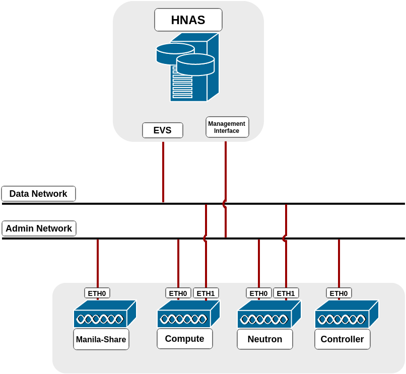

Contents
Hitachi NAS Platform File Services Driver for OpenStack¶
Driver Version 3.0¶
Hitachi NAS Platform Storage Requirements¶
This Hitachi NAS Platform File Services Driver for OpenStack provides support for Hitachi NAS Platform (HNAS) models 3080, 3090, 4040, 4060, 4080 and 4100 with NAS OS 12.2 or higher. Before configuring the driver, ensure the HNAS has at least:
- 1 storage pool (span) configured.
- 1 EVS configured.
- 1 file system in this EVS, created without replication target option and should be in mounted state. It is recommended to disable auto-expansion, because the scheduler uses the current free space reported by the file system when creating shares.
- 1 Management User configured with “supervisor” permission level.
- Hitachi NAS Management interface should be reachable from manila-share node.
Also, if the driver is going to create CIFS shares, either LDAP servers or domains must be configured previously in HNAS to provide the users and groups.
Supported Operations¶
The following operations are supported in this version of Hitachi NAS Platform File Services Driver for OpenStack:
- Create and delete CIFS and NFS shares;
- Extend and shrink shares;
- Manage rules to shares (allow/deny access);
- Allow and deny share access;
IPaccess type supported forNFSshares;Useraccess type supported forCIFSshares;- Both
RWandROaccess level are supported for NFS and CIFS shares;
- Manage and unmanage shares;
- Create and delete snapshots;
- Create shares from snapshots.
Driver Configuration¶
This document contains the installation and user guide of the Hitachi NAS Platform File Services Driver for OpenStack. Although mentioning some Shared File Systems service operations and HNAS commands, both are not in the scope of this document. Please refer to their own guides for details.
Before configuring the driver, make sure that the nodes running the manila-share service have access to the HNAS management port, and compute and network nodes have access to the data ports (EVS IPs or aggregations).
The driver configuration can be summarized in the following steps:
- Configure HNAS parameters on
manila.conf; - Prepare the network ensuring all OpenStack-HNAS connections mentioned above;
- Configure/create share type;
- Restart the services;
- Configure OpenStack networks.
Step 1 - HNAS Parameters Configuration¶
The following parameters need to be configured in the [DEFAULT] section
of /etc/manila/manila.conf:
| Option | Description |
|---|---|
| enabled_share_backends | Name of the section on manila.conf used to
specify a backend. For example:
enabled_share_backends = hnas1 |
| enabled_share_protocols | Specify a list of protocols to be allowed for share creation. This driver version supports NFS and/or CIFS. |
The following parameters need to be configured in the [backend] section
of /etc/manila/manila.conf:
| Option | Description |
|---|---|
| share_backend_name | A name for the backend. |
| share_driver | Python module path. For this driver this must be: manila.share.drivers.hitachi.hnas.driver.HitachiHNASDriver |
| driver_handles_share_servers | Driver working mode. For this driver this must be: False. |
| hitachi_hnas_ip | HNAS management interface IP for communication between manila-share node and HNAS. |
| hitachi_hnas_user | This field is used to provide user credential to HNAS. Provided management user must have “supervisor” level. |
| hitachi_hnas_password | This field is used to provide password credential to HNAS. Either hitachi_hnas_password or hitachi_hnas_ssh_private_key must be set. |
| hitachi_hnas_ssh_private_key | Set this parameter with RSA/DSA private key path to allow the driver to connect into HNAS. |
| hitachi_hnas_evs_id | ID from EVS which this backend is assigned to (ID can be listed by CLI “evs list” or EVS Management in HNAS Interface). |
| hitachi_hnas_evs_ip | EVS IP for mounting shares (this can be listed by CLI “evs list” or EVS Management in HNAS interface). |
| hitachi_hnas_file_system_name | Name of the file system in HNAS, located in the specified EVS. |
| hitachi_hnas_cluster_admin_ip0* | If HNAS is in a multi-farm (one SMU managing multiple HNAS) configuration, set this parameter with the IP of the cluster’s admin node. |
| hitachi_hnas_stalled_job_timeout* | Tree-clone-job commands are used to create snapshots and create shares from snapshots. This parameter sets a timeout (in seconds) to wait for jobs to complete. Default value is 30 seconds. |
| hitachi_hnas_driver_helper* | Python module path for the driver helper. For this driver, it should use (default value): manila.share.drivers.hitachi.hnas.ssh.HNASSSHBackend |
| hitachi_hnas_allow_cifs_snapshot_while_mounted* | By default, CIFS snapshots are not allowed to be taken while the share has clients connected because point-in-time replica cannot be guaranteed for all files. This parameter can be set to True to allow snapshots to be taken while the share has clients connected. WARNING: Setting this parameter to True might cause inconsistent snapshots on CIFS shares. Default value is False. |
* Non mandatory parameters.
Below is an example of a valid configuration of HNAS driver:
[DEFAULT]``
...
enabled_share_backends = hitachi1
enabled_share_protocols = CIFS,NFS
...
[hitachi1]
share_backend_name = HITACHI1
share_driver = manila.share.drivers.hitachi.hnas.driver.HitachiHNASDriver
driver_handles_share_servers = False
hitachi_hnas_ip = 172.24.44.15
hitachi_hnas_user = supervisor
hitachi_hnas_password = supervisor
hitachi_hnas_evs_id = 1
hitachi_hnas_evs_ip = 10.0.1.20
hitachi_hnas_file_system_name = FS-Manila
Step 2 - Prepare the Network¶
In the driver mode used by Hitachi NAS Platform File Services Driver for OpenStack, driver_handles_share_servers (DHSS) as False, the driver does not handle network configuration, it is up to the administrator to configure it. It is mandatory that HNAS management interface is reachable from a manila-share node through admin network, while the selected EVS data interface is reachable from OpenStack Cloud, such as through neutron flat networking. Here is a step-by-step of an example configuration:
The following image represents the described scenario:
{kind=link}
Run in Network Node:
$ sudo ifconfig eth1 0
$ sudo ovs-vsctl add-br br-eth1
$ sudo ovs-vsctl add-port br-eth1 eth1
$ sudo ifconfig eth1 up
Edit /etc/neutron/plugins/ml2/ml2_conf.ini (default directory), change the following settings as follows in their respective tags:
[ml2]
type_drivers = flat,vlan,vxlan,gre
mechanism_drivers = openvswitch
[ml2_type_flat]
flat_networks = physnet1,physnet2
[ml2_type_vlan]
network_vlan_ranges = physnet1:1000:1500,physnet2:2000:2500
[ovs]
bridge_mappings = physnet1:br-ex,physnet2:br-eth1
You may have to repeat the last line above in another file in the Compute Node, if it exists is located in: /etc/neutron/plugins/openvswitch/ovs_neutron_plugin.ini.
Create a route in HNAS to the tenant network. Please make sure multi-tenancy is enabled and routes are configured per EVS. Use the command “route-net-add” in HNAS console, where the network parameter should be the tenant’s private network, while the gateway parameter should be the flat network gateway and the “console-context –evs” parameter should be the ID of EVS in use, such as in the following example:
$ console-context --evs 3 route-net-add --gateway 192.168.1.1 10.0.0.0/24
Step 4 - Restart the Services¶
Restart all Shared File Systems services (manila-share, manila-scheduler and
manila-api) and neutron services (neutron-*). This step is specific to your
environment. If you are running in devstack for example, you have to log into
screen (screen -r), stop the process (Ctrl^C) and run it again. If you
are running it in a distro like RHEL or SUSE, a service command (for example
service manila-api restart) is used to restart the service.
Step 5 - Configure OpenStack Networks¶
In Neutron Controller it is necessary to create a network, a subnet and to add this subnet interface to a router:
Create a network to the given tenant (demo), providing the DEMO_ID (this can be fetched using keystone tenant-list), a name for the network, the name of the physical network over which the virtual network is implemented and the type of the physical mechanism by which the virtual network is implemented:
$ neutron net-create --tenant-id <DEMO_ID> hnas_network
--provider:physical_network=physnet2 --provider:network_type=flat
Create a subnet to same tenant (demo), providing the DEMO_ID (this can be fetched using keystone tenant-list), the gateway IP of this subnet, a name for the subnet, the network ID created on previously step (this can be fetched using neutron net-list) and CIDR of subnet:
$ neutron subnet-create --tenant-id <DEMO_ID> --gateway <GATEWAY>
--name hnas_subnet <NETWORK_ID> <SUBNET_CIDR>
Finally, add the subnet interface to a router, providing the router ID and subnet ID created on previously step (can be fetched using neutron subnet-list):
$ neutron router-interface-add <ROUTER_ID> <SUBNET_ID>
Additional Notes¶
- HNAS has some restrictions about the number of EVSs, file systems, virtual-volumes and simultaneous SSC connections. Check the manual specification for your system.
- Shares and snapshots are thin provisioned. It is reported to manila only the real used space in HNAS. Also, a snapshot does not initially take any space in HNAS, it only stores the difference between the share and the snapshot, so it grows when share data is changed.
- Admins should manage the tenant’s quota (manila quota-update) to control the backend usage.
- By default, CIFS snapshots are disabled when the share is mounted, since it uses tree-clone to create snapshots and does not guarantee point-in-time replicas when the source directory tree is changing, also, changing permissions to read-only does not affect already mounted shares. So, enable it if your source directory can be static while taking snapshots. Currently, it affects only CIFS protocol. For more information check the tree-clone feature in HNAS with man tree-clone.

Except where otherwise noted, this document is licensed under Creative Commons Attribution 3.0 License. See all OpenStack Legal Documents.